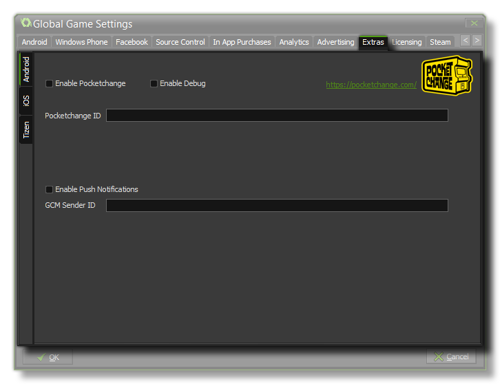

 The Extras
Tab deals with extra SDK options for those companies that don't
easily fit into any other category. Currently you can find the
Inmobi, PocketChange and Push Notification
setup options here for the Android, iOS and Tizen target
modules.
WARNING! As of the 1.3 update to GameMaker: Studio, Pocket Change is no longer applicable to the Android and iOS target platforms.
PocketChange is a system that rewards virtual currency
for plays of your game. Once you have activated this system on this
tab, when the player starts your app GameMaker: Studio will
make two calls to the PocketChange network. The first is to display
your daily reward (if any) which will also launch their api, then
there is another call which displays a button on the screen which,
if the user touches it, will display the PocketChange shop. The
normal currency exchange is 10 "tokens" per day, but this can be
negotiated with the people at PocketChange so your users can earn
for gaining achievements, high scores etc...
You can also test your PocketChange account by flagging the
"Enable Debug" check-box, in which case the standard
Daily Reward will be awarded each run of the game
until this flag is un-checked again, and you will receive extra
debug messages in the console.
For more information you can go to PocketChange.com.
In order for your game to use Push Notifications they
must be enabled here first (each target has it's own tab with a
"flag" for this), otherwise they will not work. Local notifications
on Android do not require the "GCM Sender ID", but you
must add it should you wish to create remote notifications.
Also note that local notifications are not available on the Tizen
target platform.
For further information on the functions available please see the
section Push
Notifications, and for information on setting up remote
notifications correctly, please see YoYo
Games Knowledge Base.